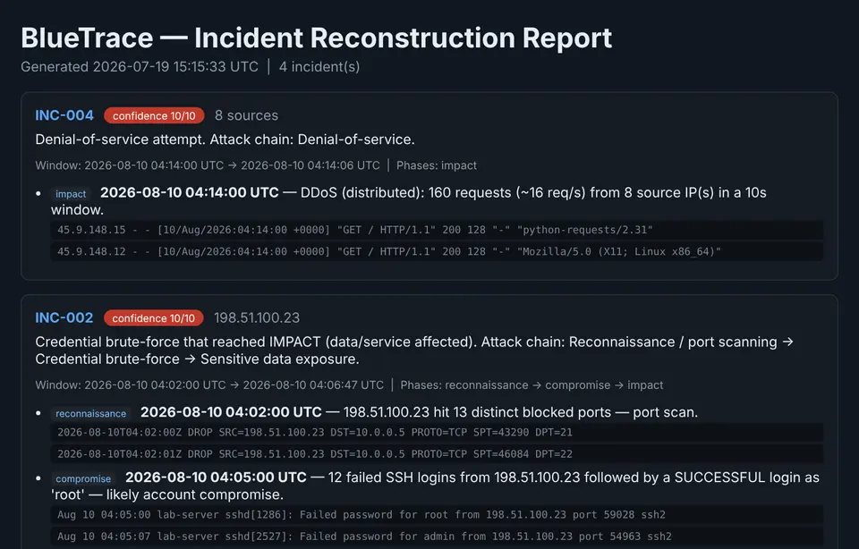
BlueTrace
A read-only log-forensics tool that rebuilds attacks from web, SSH and firewall logs.
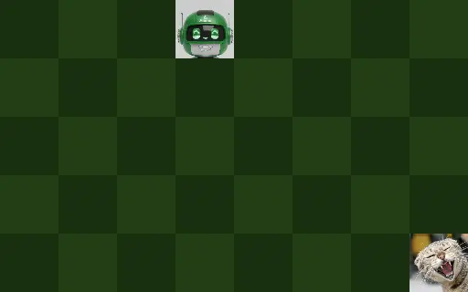
Q-Learning Machine
A reinforcement learning project in Python.
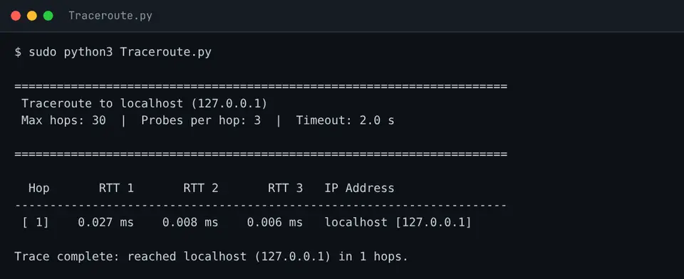
ICMP Traceroute
A networking utility built with raw ICMP.
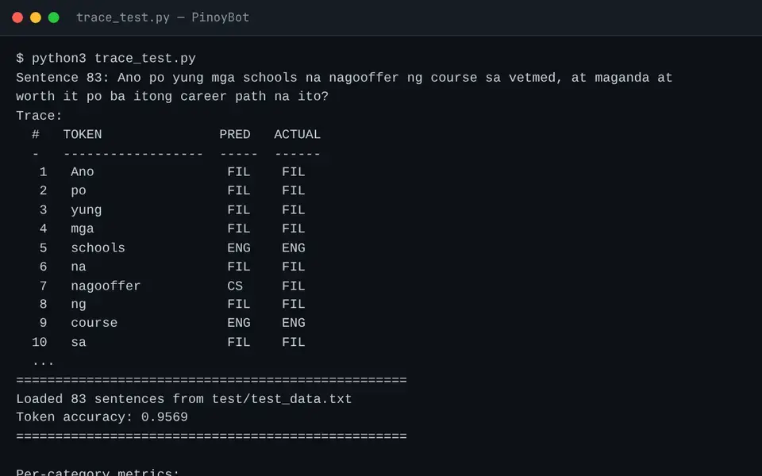
PINOYBOT Language Classifier
A Python NLP project for language detection.

Sokoban Solver
Exploring AI search and pathfinding through Sokoban.
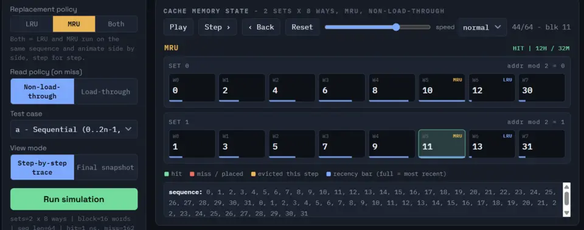
8-Way Cache Simulator
A computer architecture project exploring cache memory.
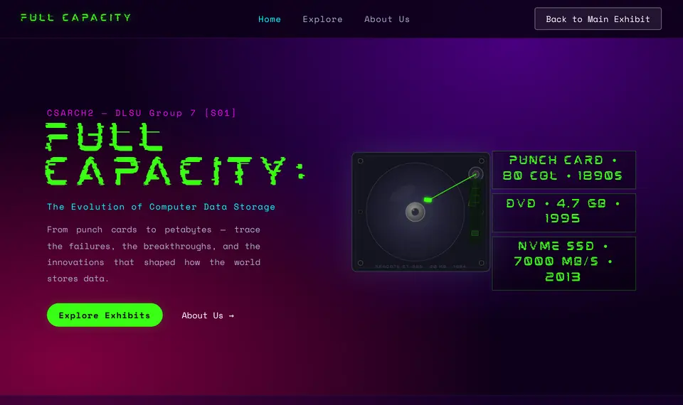
History of Data Storage
An informational HTML/CSS website about the evolution of computer data storage.
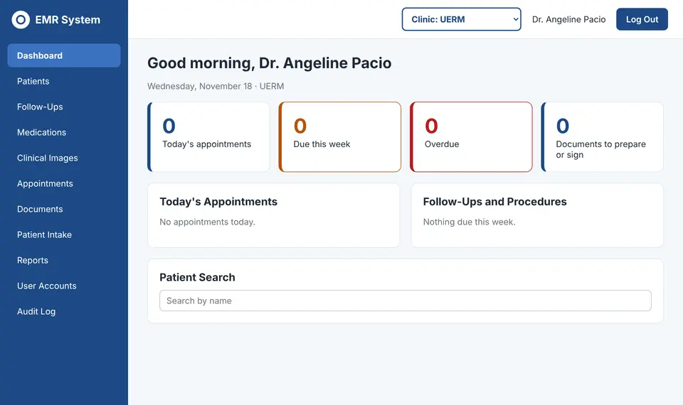
Clinic Management System
A full-stack EMR for a multi-clinic practice: patients, follow-ups, documents and audit logs.
NSCO Website
A full-stack portfolio site built with Next.js, based on the LSCS structure.

DL Planner
A grade tracker that projects your GWA and flags which courses to push for Dean's List.
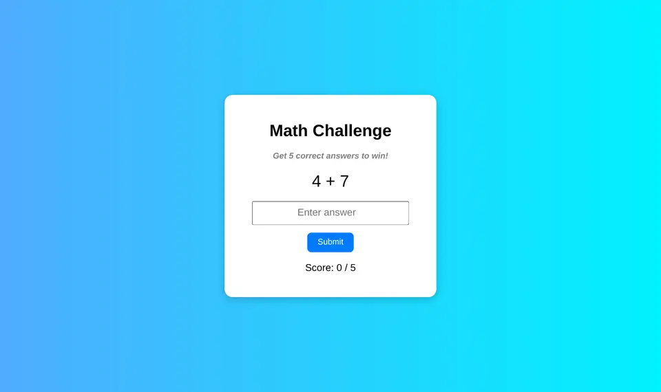
Math Challenge
A small JavaScript quiz game: get five sums right to win.
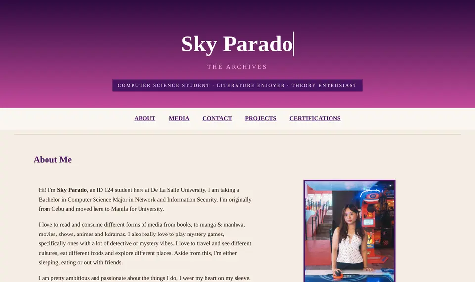
The Archives
A personal HTML/CSS site with an about page, media, projects and certifications.
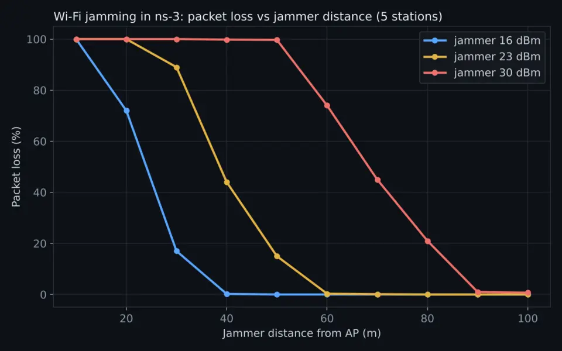
Wi-Fi Jamming Study
An ns-3 simulation of how a jammer's power and distance hurt an 802.11n network, and which mitigations help.
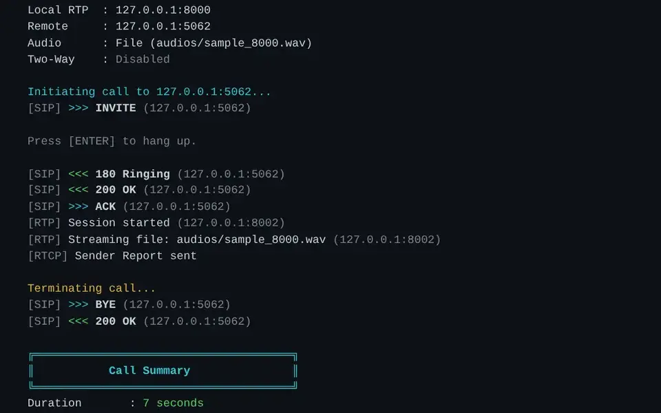
VoIP Simulator
A Java VoIP client with SIP signalling and RTP/RTCP audio streaming.
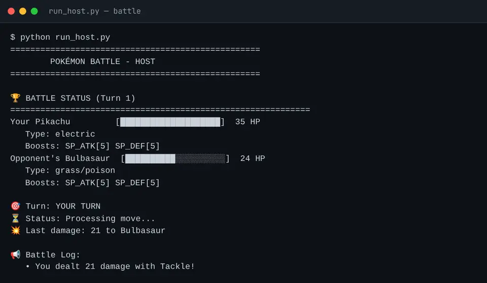
Pokémon Battle Simulation
A peer-to-peer battle game over UDP, with chat, stickers and spectators.

APCTT Hackathon 2026
A module that rates a report's technology readiness level (TRL) and quotes its evidence.
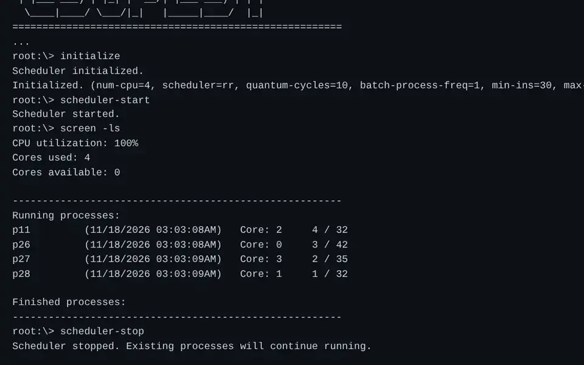
Process Scheduler & CLI
A C++ OS emulator with a round-robin multi-core process scheduler and a shell.
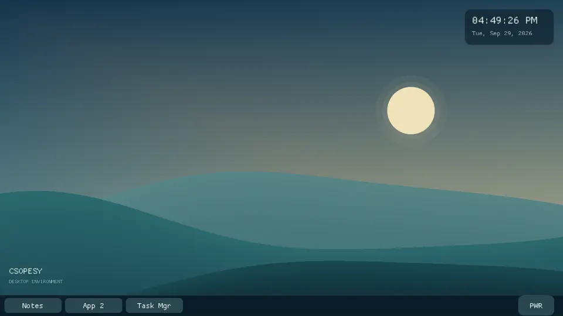
Desktop-Style OS Mock-up
A desktop shell in C++ with OpenGL and Dear ImGui: wallpaper, clock, taskbar and apps.
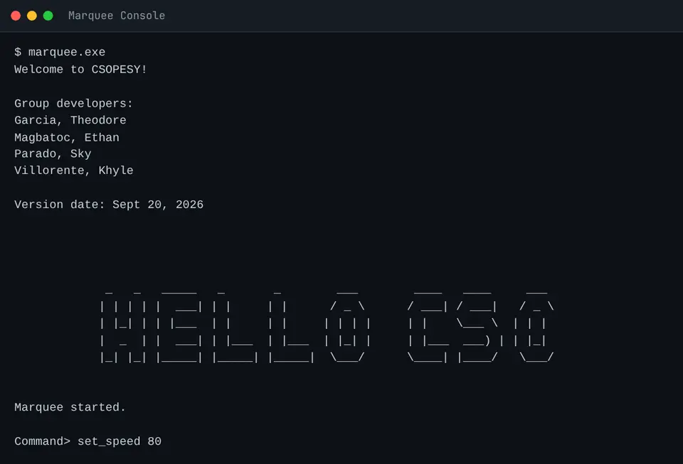
Marquee Console
A C++ console that scrolls ASCII-art text as a marquee.
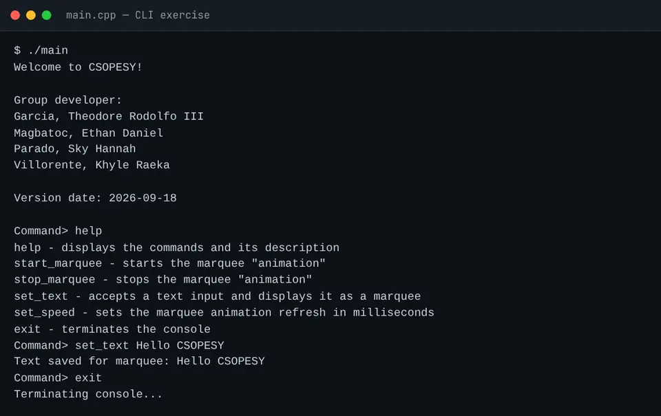
CLI Exercise
A first C++ command interpreter for the CSOPESY course.
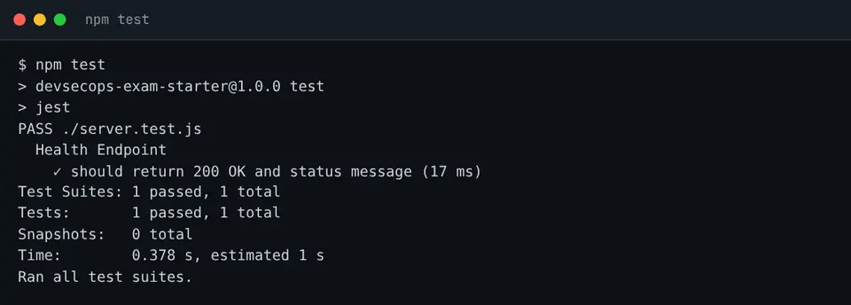
DevSecOps Starter
The Express.js API starter for the LSCS DevSecOps take-home exam.